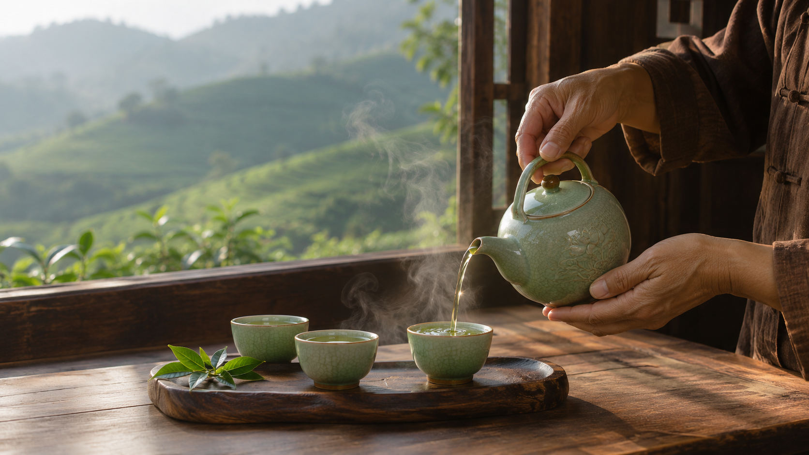

Hương xưa
trong chén mới
Từ búp chè vùng trung du đến một trải nghiệm văn hóa — Thịnh An gìn giữ nghề trà, kết nối người làm chè và kể câu chuyện quê hương bằng từng phẩm trà.
Chất liệu từ vùng chè Sông Cầu, nơi nghề trà đi cùng nhiều thế hệ.
Tôn trọng bản tính nguyên liệu, sao theo mẻ nhỏ và kiểm soát từng công đoạn.
Mỗi hộp trà mở ra câu chuyện về người, đất và ký ức vùng trung du.
Một món quà tinh tế cho gia đình, bằng hữu và những cuộc gặp quan trọng.

hồn trà Việt
Không chỉ làm trà,
chúng tôi kể chuyện
Huyền Trà Xưa là cách gọi cho một hành trình đưa văn hóa trà đến gần đời sống hôm nay: từ nương chè, bàn tay người làm nghề, đến nghi thức mời nhau một chén trà.
“Mỗi phẩm trà có thể trở thành một đại sứ truyền tải văn hóa Việt.”Gặp người kể chuyện trà →
Mười sắc thái trà
Sản phẩm và giá hiện là dữ liệu demo, được xây dựng từ những dòng trà từng xuất hiện trong nguồn báo chí và hồ sơ công khai.
Chậm một nhịp,
thấy trà sâu hơn
Một chén trà ngon bắt đầu bằng sự chú tâm. Nước, nhiệt và thời gian chỉ là kỹ thuật; lòng hiếu khách mới là phần hồn.